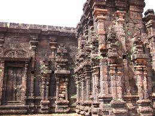

Sree Rajarajeshwara Temple
About the Temple
Taliparamba or Perumchelloor (Perinchalloor) or Chelloor (Chellur) was one among the 64 brahminical settlements (gramam) established by Parasurama in ancient Kerala. The old name of Taliparamba was ‘Lakshmipura’ as this place was considered as an abode of prosperity. All the fame and prosperity to Perinchelloor Gramam is because of the presence of Sree Raja Rajeswara temple and the blessings of Perum Thrikkovilappan. Perinchelloor Gramam has been referred in the Tamil book “Pathittupathu”, Chelloor Nadhodaym Chambu (Sanskrit), Kerala Pazhama, Kerala Mahatmyam, Jambukolpathi, Kokila Sandesam, Keralolpathi and many more. Between A.D. 216 and 333 Perinchelloor was the capital of Chera Kingdom ruled by Cheraman Perumals as referred in “Pathittupath”.
Explore More
Worship & Rituals
Discover the daily puja schedules, important rituals, and customs observed at Sree Rajarajeshwara Temple. Learn about the unique traditions, timings, and the significance of various poojas performed here.
View Worship DetailsOfferings & Services
View the list of offerings (Vazhipadu) available at the temple, including their rates and descriptions. Find out how to make offerings and the significance of each type.
See Offerings & PricingPlan Your Visit
Get information on temple timings, facilities, administration, and contact details. Find out about accommodation options and everything you need to plan a smooth visit to the temple.
Plan Your Visit